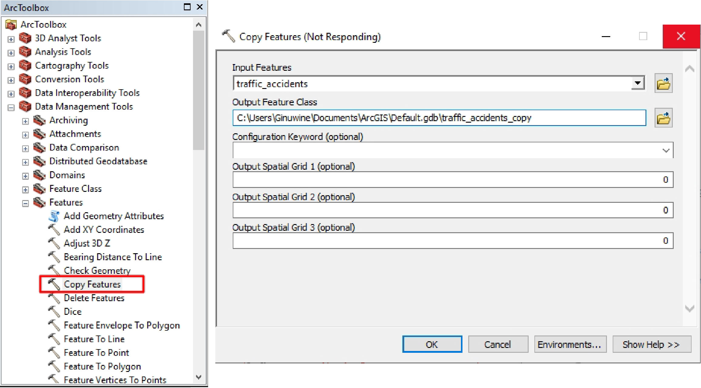

Spatial Analysis of Traffic Accidents in Hillsborough County - Florida
by Gemmie Wesley Motuba MaEnow
Introduction
Road Accidents
Roads are necessary in our everyday lives, and we all use them in various ways (walking, driving or walking) to meet our daily needs. Unfortunately, these routes which serve us come with risk, and involves people losing their lives and being injured on a daily basis.
Road traffic accidents are serious problems that results in physical, emotional and financial loss and damage. According to the WHO 2013 Global Road Safety report, road accidents are among the ten leading causes of death worldwide(WHO, 2013), every second someone dies on the road (WHO Global status report on road safety 2018). For example, 95 percent of transportation deaths in the U.S. happen on streets, roads and highways, and in 2020 the U.S. recorded approximately 38,000 people killed by road accidents (U.S. NHTSA, 2021). Due to the enormous impacts of road accidents, it is relevant to make big efforts to reduce their occurrence.
Relevance of Road Accident Research
Research in road accidents has contributed to progress made in addressing the road accident crisis around the world. For example; the Las Vegas Crash mitigation program which first involved evaluating road crashes to make data driven decisions on road intersections suitable for safety improvements. This project showcases how road accident analysis are important in having safer roads.
Project Problem and Aim
Several measures are implemented to reduce road traffic accidents, but before all this it is relevant to explore data related to road accidents, so as to know where accidents are likely to happen and to keep commuters safer. Hillsborough County in Florida is one of the deadlist counties for commuters in the United States according to the zebra's report on most dangerous roads in the United States. In the 2021 traffic carsh report from Florida Highway Safety and Motor Vehicles (FLHSMV), Hillsborough recorded a number of 271 fatalities from traffic crashes. Furthermore, the number of crash (road accidents) incidents within September-December 2021 increased from 870 to 886. Such crash statistics about this county raises the question of; what areas have high road traffic accident incidents?
To answer this question the aim which is; to identify areas with high clusters of road traffic accidents (road accident hotspots) in Hillsborough County by using historical road accident (crash) data was established. This project applies hotspot dectection to find these high traffic accident areas. Hotspots identification is an important aspect in controlling road accidents because it enables effective traffic management at the hotspots. These hotspots are areas with a high rate of road traffic accidents.
ArcMap software is used from the data preparation phase througth to the result interpretation to explore the available datasets so as to achieve the aim of this project.
Study Area
This project focuses on Hillsborough County in Florida (USA). This county was selected due to it having the second highest fatality road crashes in Florida, after Miami-Dade county. (The Zebra, 2020). Hillsborough County is the heart of Tampa Bay and located in the West central portion of the U.S. state of Florida (Visit Tampa Bay, 2022). This county is located at 27° 54′ 36″ N, 82° 21′ 0″ W.
Map shows study area in red square - Hillsborough County, Florida (U.S.A). (Zoom into map to get a clear view)
Tentative Project Plan
Achieving the aim of this project involves several phases and most of the task will be carried out in ArcMap and ArcGIS Online;
Week 2 : Data Collection - all datasets will be identified and collected.
Week 3 : Data Preparation/Documentation - data to be used will be processed and documented ready for analysis.
Week 4 : Analysis - analysis workflow will be applied.
Finally Week 4 : Results Visualisation and Interpretation - the output from the analysis will be shared and published in various formats and ArcGIS online.
Data Collection
Data required for this project was collected from various resources. Figure 1 illustrates the data collection proceedure applied in this project and table 1 shows a brief outline of data used.
Figure 1 : Data Collection Proceedure used in this project.
Table 1 : Datasets with sources used in this study
Data Collection Description
Data of road traffic accidents was collected from the Hillsborough county sheriff's office (HCSO) public GIS website. This data collected was for reported accidents between 2020 and 2021, and available in Excel CSV format. It contained the location (latitude and longitude) of accidents with some attribute data. This data can be read and converted into GIS shapefiles.
Roads, bikelanes, zip code boundaries, county boundary, hospitals, municipality boundaries, cities and schools.
Data Preparation and Documentation
Data Documentation
This phase involves describing data collected, to make it easier to understand it's use in this project.
Data Collected Description
Traffic Accidents : This dataset contains 3100 traffic accident records that happened between 2020 and 2021, locations, number of accidents at a location, street of accident and rating of accident. This is the main data of interest in order to meet the aim of this project. The data was collected in CSV format. This is the main input data used for this study during the analysis phase.
Roads : Data on roads within the county, from streets to major highways. This dataset has 30,719 records. Data was collected as a polyline shapefile.
Bikelanes : Data includes segments of various bikelane paths within the county. It has attribute data such as length of various segments, name of lane and others.
County Boundary : Boundary of Hillsborough County, collected in as a shapefile. Has attributes such as, shape_area, shape_perimeter and others. This boundary shapefile will be part of the basemap.
Cities in Hillsborough County : Cities located in Hillsborough county makeup this dataset. It has city name, shape_length, shape_area and other attributes.
Zipcode Boundaries : This polygon shapefile contains zipcode boundaries of the various zipcodes within Hillsborough, and also zip codes, area zip code belongs to, shape_area and shape_length.
Data Preparation
Several datasets used in this project where prepared using different techniques to make it suitable for analysis and interpretation of results. Some techniques involved; conversion of data files to a suitable format, changing symbology, transforming coordinate system, removing attribute data (not relevant to the project) and others. All these were accomplished using the ArcMap software.
Conversion of CSV dataset formats to shapefiles
First step involved converting the "traffic_accidents_new.csv" file to a point shapefile-"traffic_accidents.shp", which will be aggregated to make it suitable for analysis.
After conversion an Initial Data assessment is done to check if the number of incident points is above 60. This is done because results from statistical methods are only reliable if the features are not less than 30. The "traffic_accidents.shp" has more than 60 features or incident points present (See Figure 3), making it a resource for reliable results for this study.
Figure 2 : Conversion of "traffic_accidents_new.csv" to shapefile in ArcMap. The point shapefile data of traffic accidents is also the input data for carrying out the analysis.Figure 3 : Shows attribute table of traffic_accidents.shp. The red rectangle below has some numbers depicting that there are more than 60 features in our traffic_accident dataset, making it reliable to be used for this project.
Other datasets used in this study came in ready-to-use shapefiles (point, polyline and polygon), so did not need alot of processing, but they under went preparations such as; the projection of datasets to the same coordinate system - NAD_1983_StatePlane_Florida_FIPS_0902_Feet(See Figure 4), change of symbology for better visualisation during analysis and result interpretation and editting attribute tables to have only metadata needed for the study.
Figure 4 : The projected coordinate system used for all datasets.Figure 5 : Shows some of the data (cities, zip_codes, Hillsbororugh_county) collected for this study, and all are projected in the same coordinate system.
Data Analysis
This project focuses on - finding areas with statistically high clusters of traffic accidents in Hillsborough County - , achieving this requires performing a hotspot analysis using Optimized Hot Spot Analysis. This analysis is carried out in ArcMap (ArcGIS software). This tool identifies statistically significant spatial clusters of high values and low values and finds patterns in the data . The analysis workflow used for this project had to be shown in a model builder image, unfortunately ArcMaP crashed everytime the mdel was being assembled. The ArcGIS Optimised Hot Spot Analysis tool is the also Hotspot Analysis tool, but the difference is the latter gives options for the user to set there own parameters manually, while for the former parameters are already set automatically based on the input data to produce optimal hot spot analysis results.
Creating a Copy of the Traffic Accidents Data
Now that the analysis method has been identified, the original input data (traffic_accidents.shp) used will undergo some modification and, this renders it impossible to use for other analysis so a copy is made (Figure 7). When the "Copy Features" tool finishes running, a new "traffic_accident_copy.shp" is added to the map.

Figure 7 : Copy Features tool dialogue box used to create a copy of traffic accident data.
Identifying and Processing Attribute Data from Traffic Data for Analysis
After creating the copy, two methods for running analysis had to be used to en ensure the result accuracy. One where an "Analysis Field" was used and the other which involved aggregating the data using "FISHNET POLYGONS" before running the analysis. These two optimised hot spot analysis methods were used to see if the create similar results.
To run the first one, attribute data on accident count per location indicated as "Accident_C" - (Figure 8), was used as the input value for the analysis field. This attribute data was choosen because it gives each point feature (accident location) a value, and with there is no need to "snap" the points together and aggregate them before running the analysis.
Figure 8 : Identify dialogue box, which shows various attribute data of a traffic accident, and the "Accident_C" shows the number of accident incidents at that location.
The second one is the aggregation of incident data using the "FISHNET POLYGONS", and this would count the number of accident points within the fishnet grid.
Figure 9 : "Accident_C" column shows the number of accident incidents at a location. This was used to assign each point a value to carrying out the analysis.
Snapping points simply involves grouping points together under the same coordinate location which are within the x,y tolerance of one another. This can be done using the "Integrate" tool in ArcGIS Data Management toolbox. This makes it possible to identify hot zones. This tool would have been used in this study if each accident location represented just one accident incident but since that is not the case it will not be applied.
Running Optimised Hotspot Analysis
At this level after identifying the various input field data, spatial statistical analysis can now be done using the Optimised Hotspot Analysis tool.
To run the optimised hot spot analysis, it is selected as such ArcToolbox > Spatial Statistics > Mapping Clusters. Then the various input information for the first analysis were(Input Features and Analysis Field) is inserted into the hotspot analysis dialogue box (Figure 10a) and then runned. In this part of the study, there is no need to aggregate the incident data (traffic accident data points), because they had values based on "Accident_C" which is accident count per location.
A second analysis involving incident data aggregation using fishnet polygons aggregation method.
Title Input
Input data
Input Features
traffic_accidents_copy
Analysis Field (optional)
Accident_C
Table 2 : Input for Optimised Hot Spot Analysis
Figure 10a : Optimised Hot Spot Analysis dialogue box with parameters input to run analysis.Figure 10b : Optimised Hot Spot Analysis dialogue box with Incident Data Aggregation Method used.
Optimised Hotspot Analysis Output Results
The analysis with "Analysis Field" creates statistically significant clusters of high values (hotspots) and low values (coldspots) and, is represented by a new output point feature class called Traffic_Accident_Optimised_Hotspot. Examining the output attribute table reveals that each feature has a z-score, p-value and confidence level bin (Gi_Bin). Point features with high z-scores indicate that the area is a hot spot and represented by red points (Figure 11a). These are statistically significant areas with a high confidence level (90% to 99% confidence with Gi_Bin betwen +1 to +3) and, means these zones have high concentration (hotspots) of accident incidents. Identifying these areas is the interest of this study.
The other method using fishnet aggregation created a fishnet grid. The red areas are statistically significant hotspots for accident incidents (Figure 11c).
Figure 11a : Output from running Optimised Hotspot Analysis with Analysis Field input, shows accident hotspots in red points. Hotspot Analysis for accidents between 2020-2021 Figure 11b : Optimised Hotspot Analysis output attribute table.Figure 11c : Output for Optimised hotspot analysis fishnet method. The red areas represent statistically significant hotposts for accident incidents between 2020-2021.
Results
The results obtained from the analysis are visualised with other data to gain more insight on where accidents occur in Hillsborough County, Florida. This was run in ArcMap software. This will make it possible to give recommendations to stakeholders on where resources can be invested to reduce accident incidents within the county. These results are overlayed with road, bikelanes, municipalities, city and zipcode data (See Data Collection).
Several datasets were overlayed with the analysis results and outputs were created in the form of maps and interpreted to answer this study's question - "what areas have high road traffic accident incidents?".
This question further led to an interest to check if these zones are near schools, hospitals and bikelanes.
Traffic Accident Hotpsots Analysis Results
Traffic accident hotspots in Hillsborough County(Figure 12a and 12b) had high values (hotspots) of clustering with a confidence level of 99% are indicated as red points/areas.
Figure 12a : Traffic Accident Hotspots analysis (2020-2021) results using the Analysis field Optimised Hot spot analysis method. Figure 12b : Traffic Accident Hotspots map created from the optimised hot spot analysis incident data aggregation method (fishnet polygons aggregation method). The red areas represent statistically significant hotposts for accident incidents that happened between 2020-2021.
Findings from the Hotspot Analysis
The analysis results with the Gi_Bin point outputs was further analysed to extract more information on the location of these traffic accident hotspots. The streets field from "Traffic_Accidents.shp" was joined to the output of the analysis to locate the streets with these hotspots. 902 hotspots were identified, then selected and a new layer was created from this selection. These hotspots selected have a confidence level of 99%.
Figure 13a : Hillsboorough County Traffic Accident Hotspots attribute table.Figure 13b : Hillsboorough County Traffic Accident Hotspots.
The data further shows that U.S. 301 Highway S (301 HW S) is were majority of the hotspots (153)(Figure 14a) are found. It has approximately 18 intersections where accidents hotspots are located making it a problematic route. Zipcodes (Figure14b)where hotspots are located were also identified and the Riverview zipcode - 33578 had the highest traffic accident hotspots (206 hotpsots).
Figure 14b : Hillsborough County Traffic Accident Hotspots on US 301 HW S, making it the street with the most hotspots.Figure 14b : Zipcodes where Hillsborough County Traffic Accident Hotspots are located.
Analysis with ArcGIS Online
More analysis was done using ArcGIS Online. The shapefiles for traffic accident incidents and zipcodes were all converted into KML formats (Figure 15a) in order to be used in ArcGIS Online.
Figure 15a : KML data layers and Map used for further analysis in this project.
Various data were added after creating a folder for the project. This was followed by the creation of a map named Traffic Accident Hotspots in Hillsborough County.To change the symbology of the data and enabling editting the KML data files where converted to shapefiles.
Figure 15b : Traffic Accident Map created in ArcGIS online for Hotspot Analysis.
With the ArcGIS Online sharing function, it is possible to embedd and share the link to this - Traffic Accident Hotspots in Hillsborough County Map (Figure 15c) on any webpage. Public access for editting, reviewing and contributing to the project ws enable.
ArcGIS Online Traffic Accident Hotspots in Hillsborough County Map project.
After the data was added hotspot analysis had to be done, unfortunately because a public ArcGIS Online account was used analysis was only limitied to finding clusters in the data. Before performing the clustering analysis, the symbology of the "Traffic Accident" layer was changed make to symbolise number of accidents per location. This was done using the "Accident_Count" attribute field.
Cluster Analysis was run on the Traffic Aciident layer and major clusters were identified. The clusters were put into 5 categories. The largest traffic accident cluster represented 168 features (Figure 15c) and, this is found in Tampa Zip_code 33634. Since the traffic accident data was overlayed on the zipcode layer, it was possible to know clustering information for each zipcode. This was possible due to information pop-up box (Figure 15c) which displays data associated to the selected feature in a layer. This pop-up is configured for each layer.
Figure 15b : Traffic Accident Map results after performing clustering analysis.Figure 15b : Traffic Accident Map showing information tag on selected cluster.